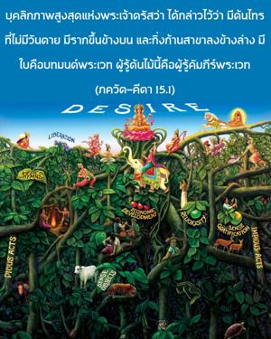
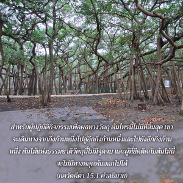

บุคลิกภาพสูงสุดแห่งพระเจ้าทรงตรัสว่า มีการกล่าวไว้ว่ามีต้นไทรที่ไม่มีวันตาย มีรากขึ้นข้างบน และกิ่งก้านสาขาลงข้างล่าง มีใบคือ บทมนต์พระเวท ผู้รู้ต้นไม้นี้คือ ผู้รู้คัมภีร์พระเวท


หลังจากที่ได้สนทนากันถึงความสำคัญของ ภกฺติ-โยค อาจมีคำถามขึ้นมาว่า “คัมภีร์พระเวทคืออะไร” ได้อธิบายในบทนี้ว่า จุดมุ่งหมายของการศึกษาคัมภีร์พระเวทคือการมาเข้าใจองค์กฺฤษฺณ ดังนั้นผู้ที่อยู่ในกฺฤษฺณจิตสำนึก หรือผู้ปฏิบัติในการอุทิศตนเสียสละรับใช้เป็นผู้รู้คัมภีร์พระเวทเรียบร้อยแล้ว
การพันธนาการของโลกวัตถุนี้เปรียบเทียบกับต้นไทรไว้ ณ ที่นี้ สำหรับผู้ปฏิบัติกิจกรรมเพื่อผลทางวัตถุต้นไทรนี้ไม่มีที่สิ้นสุด เขาจะเดินทางจากกิ่งก้านหนึ่งไปสู่อีกกิ่งก้านหนึ่งและไปยังอีกกิ่งก้านหนึ่ง ต้นไม้แห่งธรรมชาติวัตถุนี้ไม่มีจุดจบ และผู้ที่ยึดติดกับต้นไม้นี้จะไม่มีทางหลุดพ้นออกไปได้ บทมนต์พระเวทที่หมายไว้เพื่อพัฒนาตัวเราเป็นใบของต้นไม้นี้ รากของต้นงอกขึ้นข้างบน เนื่องจากรากเหล่านี้เริ่มจากสถานที่ที่พระพรหมทรงประทับอยู่ซึ่งเป็นดาวเคราะห์สูงสุดแห่งจักรวาลนี้ หากผู้ใดสามารถเข้าใจต้นไม้แห่งความหลงที่ไม่มีวันถูกทำลายนี้ เขาจึงสามารถออกไปจากมันได้
เราควรเข้าใจวิธีการแก้เพื่อให้หลุดพ้น ในบทก่อนๆได้มีการอธิบายไว้ว่ามีหลายวิธีที่จะทำให้เราหลุดออกไปจากพันธนาการทางวัตถุจนกระทั่งมาถึงบทที่สิบสามเราพบว่าการอุทิศตนเสียสละรับใช้ต่อองค์ภควานฺเป็นวิธีที่ดีที่สุด บัดนี้หลักพื้นฐานแห่งการอุทิศตนเสียสละรับใช้คือการไม่ยึดติดกับกิจกรรมทางวัตถุและมายึดมั่นกับการรับใช้ทิพย์ต่อพระองค์ วิธีการที่จะตัดการยึดติดกับโลกวัตถุได้กล่าวไว้ในตอนต้นของบทนี้ รากแห่งความเป็นอยู่ทางวัตถุนี้งอกขึ้นข้างบนเช่นนี้หมายความว่า เริ่มจากแก่นสารทางวัตถุมวลรวมจากดาวเคราะห์สูงสุดแห่งจักรวาล และจากที่นั่นจักรวาลทั้งหมดขยายออกด้วยสาขาที่แยกแขนงออกมากมายซึ่งมาเป็นระบบดาวเคราะห์ต่างๆ ผลทางวัตถุที่ได้รับคือผลลัพธ์แห่งกิจกรรมต่างๆของสิ่งมีชีวิต เช่น การศาสนา การพัฒนาเศรษฐกิจ การสนองประสาทสัมผัส และความหลุดพ้น
ในโลกนี้ไม่มีประสบการณ์โดยตรงเกี่ยวกับต้นไม้ที่มีกิ่งก้านสาขาแยกแขนงลงข้างล่างและมีรากขึ้นข้างบน ต้นไม้ชนิดนี้พบได้ที่ขอบสระน้ำ เราสามารถเห็นต้นไม้นี้สะท้อนอยู่ในน้ำมีกิ่งก้านสาขาแยกลงข้างล่างและรากขึ้นข้างบน อีกนัยหนึ่งต้นไม้แห่งโลกวัตถุนี้เป็นเพียงภาพสะท้อนของต้นไม้จริงในโลกทิพย์ การสะท้อนของโลกทิพย์นี้สถิตอยู่ในความปรารถนาเหมือนกับการสะท้อนของต้นไม้สถิตอยู่ในน้ำ ความปรารถนาหรือความต้องการเป็นต้นเหตุของสิ่งต่างๆที่สถิตในแสงแห่งวัตถุที่สะท้อนมานี้ ผู้ที่ปรารถนาจะออกไปจากความเป็นอยู่ทางวัตถุต้องรู้ถึงต้นไม้นี้อย่างละเอียดถี่ถ้วน ด้วยการวิเคราะห์ศึกษาเราจึงสามารถตัดความสัมพันธ์จากมันออกไปได้
ต้นไม้ที่เป็นภาพสะท้อนจากของจริงนี้ถอดแบบออกมาเหมือนกันทุกอย่าง มีทุกสิ่งทุกอย่างที่มีอยู่ในโลกทิพย์ พวกที่ไม่เชื่อในรูปลักษณ์คิดว่า พฺรหฺมนฺ เป็นรากของต้นไม้วัตถุนี้ ตามปรัชญา สางฺขฺย กล่าวว่าจากรากนี้ ปฺรกฺฤติ, ปุรุษ ออกมา จากนั้นสาม คุณ ออกมา จากนั้นธาตุหยาบทั้งห้า ( ปญฺจ-มหา-ภูต ) ออกมา จากนั้นประสาทสัมผัสทั้งสิบ ( ทเศนฺทฺริย ) จิตใจ ฯลฯ เช่นนี้พวกเขาแบ่งโลกวัตถุทั้งหมดเป็นยี่สิบสี่ธาตุหาก พฺรหฺมนฺ เป็นศูนย์กลางของปรากฏการณ์ทั้งหมดโลกวัตถุนี้ก็เป็นปรากฏการณ์ของศูนย์กลาง 180 องศา และอีก 180 องศาเป็นโลกทิพย์ โลกวัตถุเป็นภาพสะท้อนที่กลับตาลปัตร ดังนั้นโลกทิพย์จะต้องมีความหลากหลายเช่นเดียวกัน แต่ในความเป็นจริง ปฺรกฺฤติ เป็นพลังงานเบื้องต่ำขององค์ภควานฺ และ ปุรุษ คือตัวองค์ภควานฺ นั่นคือคำอธิบายใน ภควัท-คีตา เนื่องจากปรากฏการณ์นี้เป็นวัตถุจึงไม่ถาวรภาพสะท้อนไม่ถาวรเพราะว่าบางครั้งมองเห็น และบางครั้งมองไม่เห็นแต่ของแท้ที่ทำให้ได้ภาพสะท้อนมานั้นเป็นอมตะ ภาพสะท้อนวัตถุจากต้นไม้จริงจะต้องถูกตัดออก เมื่อกล่าวว่าบุคคลรู้คัมภีร์พระเวทหมายความว่าเขารู้ว่า จะตัดการยึดติดกับโลกวัตถุนี้ให้ออกไปได้อย่างไร หากรู้วิธีการนี้เขาเป็นผู้รู้คัมภีร์พระเวทโดยแท้จริง ผู้ที่หลงใหลอยู่กับสูตรพิธีกรรมต่างๆของพระเวทเท่ากับหลงอยู่กับใบสีเขียวอันสวยงามของต้นไม้โดยไม่รู้จุดมุ่งหมายของคัมภีร์พระเวทอย่างแท้จริง จุดมุ่งหมายของคัมภีร์พระเวทเหมือนดังที่บุคลิกภาพสูงสุดแห่งพระเจ้าทรงเปิดเผยคือ ให้ตัดภาพสะท้อนของต้นไม้นี้ออกและบรรลุถึงต้นไม้ที่แท้จริงแห่งโลกทิพย์